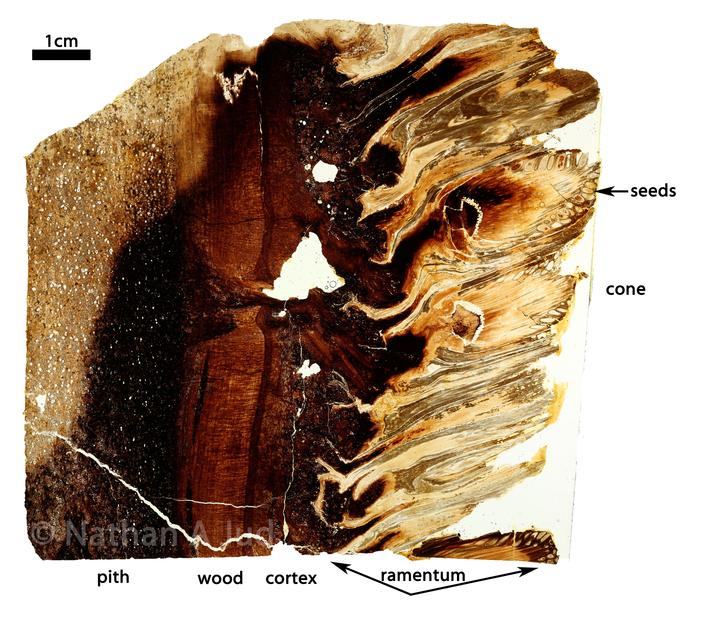
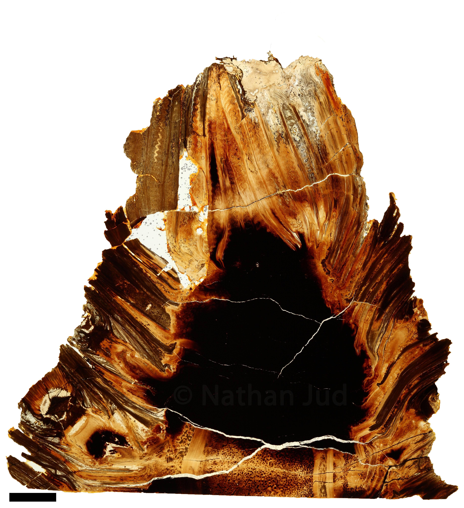

Inside a Cycadeoidea trunk
Readers with something of a paleobotany background may already know that cycadeoids are not the same as modern cycads, and that early interest in these plants was driven by the hypothesis that they were closely related to flowering plants. Today it appears that cycadeoids were part of their own distinct lineage of seed plants, and the sister group of flowering plants continues to be debated (Rothwell et al. 2009).
Cycadeoids grew somewhat like palms and cycads. Palms and cycads have a primary thickening meristem. In other woody plants the growing shoot tip adds height whereas the vascular cambium adds thickness by producing wood and bark. In plants with a primary thickening meristem the growing tip adds both height and girth. These plants either don’t produce wood at all (palms) or the vascular cambium produces relatively little wood (cycads, and probably cycadeoids). Like many cycads, Cycadeoidea stems are covered in the hard, persistent bases of old, shed leaves.
The way the cones are borne is very different. In modern cycads, cones form when the shoot apex divides into two unequal branches: one becomes a pollen or seed cone, while the other remains dormant until the cone matures, then resumes growth and pushes the cone to one side, leaving a “cone dome” in the pith of the trunk. It appears that unlike other seed plants, cycads have no axillary buds, and ovulate Cycas plants don’t form cones at all, producing whorls of seed-bearing leaves between whorls of foliage leaves instead (Stevenson 2020). In Cycadeoidea, by contrast, the cones are lateral shoots in the axils of leaves, so the outer armor of leaf bases is interspersed with cones (Andrews 1943; Nishida 1994). Many cones produced both pollen and seeds (Delevoryas 1963), though you may see them referred to as flowers. Crepet (1974) interpreted the mature cones as remaining closed, which would mean they were largely self-pollinated.

First is a longitudinal section of a Cycadeoidea trunk, as though the stem were cut in half along its axis. Look at how small the seeds were! In some cycadeoids, like Monanthesia, there were cones associated with nearly every leaf (Delevoryas 1959), so these plants had high fecundity. The little gray or brown bodies in the seeds, here and in the second image, are the embryos: cute little baby cycadeoids. In some of them you can make out a pair of cotyledons.

Next is a tangential section of the trunk through the outer armor of leaf bases and cones. Because the cones are borne laterally, you are looking at cross sections of the cones, as though each cone were cut in half perpendicular to its axis.

Last is a near-longitudinal section through a stem apex. Most of the stem tissue is opaque (black), but you can see the pith bounded by vascular tissue at the bottom of the photo, and the armor of leaf bases along the sides, with a cone base in the lower left. The tip is where we would expect immature leaves to develop. The wavy, hair-like lines are ramentum, the dense covering of hairs and scales packed between the leaf bases and around the developing leaves.
Mature leaves have never been found attached to permineralized Cycadeoidea trunks, but the leaves were basically pinnate fronds (Nishida 1994). The vascular bundles entering each leaf base form a ring, an arrangement shared with the leaves of other bennettitaleans such as Nilssoniopteris, and different from the inverted-omega (C-shaped) arrangement in the petioles of cycads (Yamada et al. 2009).
References
- Andrews, H.N. 1943. On the vascular anatomy of the cycadeoid cone axis. Annals of the Missouri Botanical Garden 30: 421–427.
- Crepet, W.L. 1974. Investigations of North American cycadeoids: the reproductive biology of Cycadeoidea. Palaeontographica B 148: 144–169.
- Delevoryas, T. 1959. Investigations of North American cycadeoids: Monanthesia. American Journal of Botany 46: 657–666.
- Delevoryas, T. 1963. Investigations of North American cycadeoids: cones of Cycadeoidea. American Journal of Botany 50: 45–52.
- Delevoryas, T. 1971. Biotic provinces and the Jurassic–Cretaceous floral transition. Proceedings of the North American Paleontological Convention, Part L: 1660–1674.
- Nishida, H. 1994. Morphology and the evolution of Cycadeoidales. Journal of Plant Research 107: 479–492.
- Rothwell, G.W., Crepet, W.L. & Stockey, R.A. 2009. Is the anthophyte hypothesis alive and well? New evidence from the reproductive structures of Bennettitales. American Journal of Botany 96: 296–322.
- Stevenson, D.W. 2020. Observations on vegetative branching in cycads. International Journal of Plant Sciences 181(6). https://doi.org/10.1086/708812
- Ward, L.F. 1905. Status of the Mesozoic floras of the United States, second paper (with the collaboration of W.M. Fontaine, A. Bibbins and G.R. Wieland). U.S. Geological Survey Monograph 48.
- Yamada, T., Nishida, H. & Legrand, J. 2009. Structurally preserved Nilssoniopteris from the Arida Formation (Barremian, Lower Cretaceous) of southwest Japan. Review of Palaeobotany and Palynology 156: 410–417.